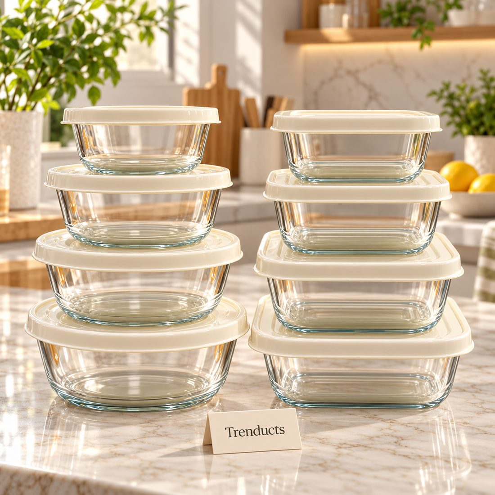
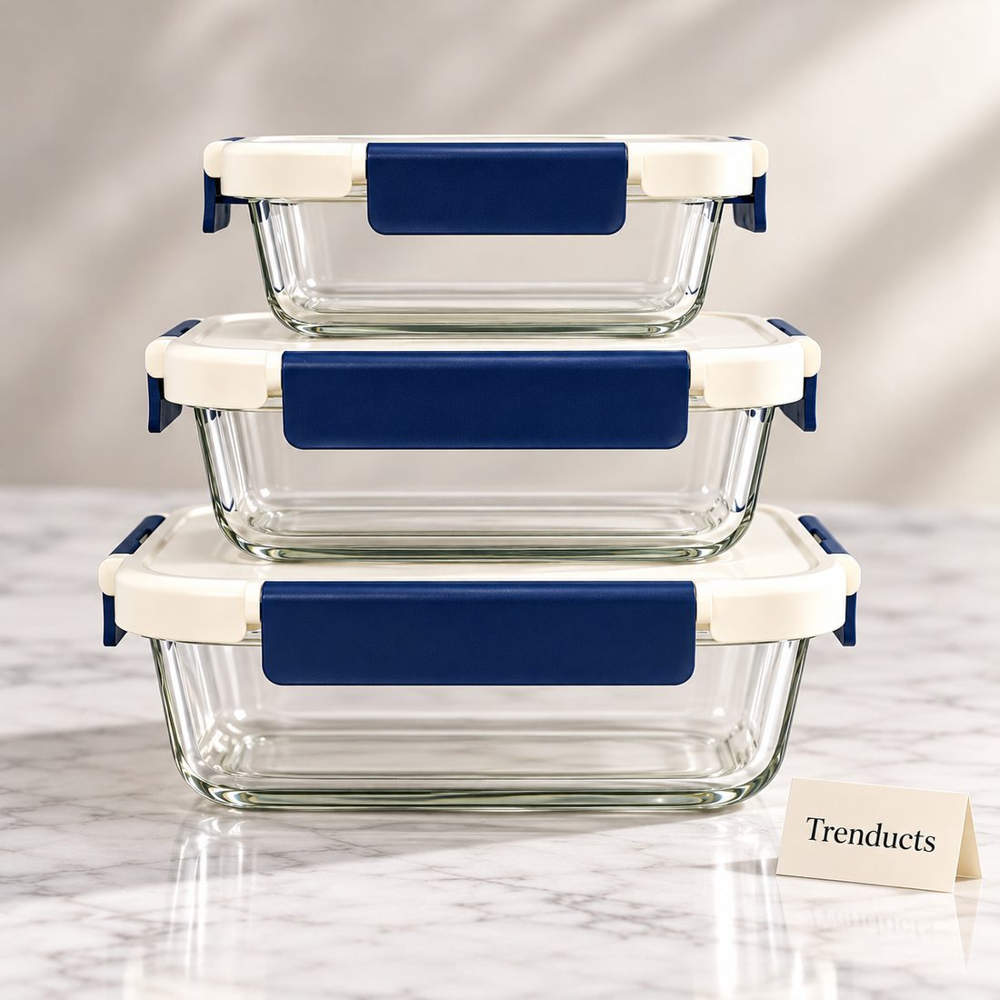
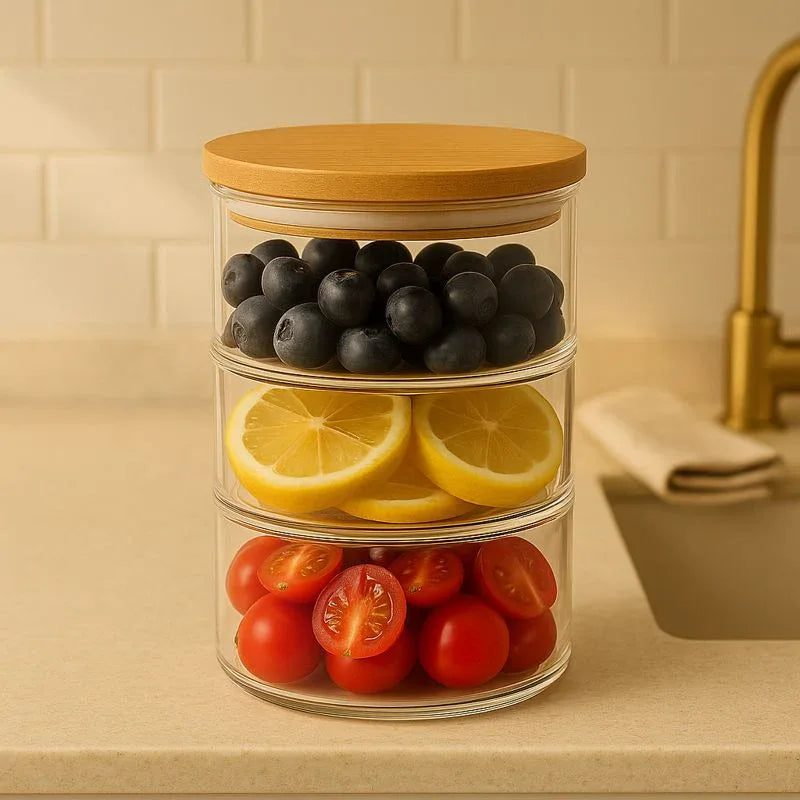

How to cool, store and reheat leftover salan, daal, rice and biryani safely, and why glass containers make leftovers easier to manage.

In most Pakistani homes, food is cooked generously. Nobody wants a guest to leave hungry, and a pot of salan is often made to last two meals. That means leftovers are a daily fact of life, and how they are stored matters for both taste and safety.
The guidance below draws on widely shared food safety advice. It is not a replacement for professional guidance, but following these basics helps keep your family's food fresh and safe.
Many families leave a pot on the stove for hours after a meal, often until the next morning. In Pakistan's warm climate this is risky, especially for rice, meat and dishes with yoghurt or cream. Widely followed food safety guidance, such as advice from the USDA, is to refrigerate cooked food within two hours, and within one hour in very hot conditions.
To cool food faster, transfer it out of the hot pot into smaller, shallow containers. A large, deep pot holds heat in its centre for a long time, even in the fridge. Spreading food into shallower containers lets it cool evenly.
Cooked rice is a known food safety concern when left at room temperature, because certain bacteria can survive cooking and grow as rice cools slowly. Cool leftover rice and biryani quickly, refrigerate it promptly and reheat it until it is steaming hot all the way through. Avoid reheating the same rice more than once.

Containers in a few sizes are more useful than many of one size. A small one for a single portion of daal, a medium one for salan and a large one for rice cover most needs.
Leftovers are easiest to manage if you know when they were cooked. A strip of masking tape with the day written on it is enough. Put older leftovers at the front of the fridge and newer ones behind, so the oldest gets eaten first. Many guidelines suggest eating refrigerated leftovers within three to four days.
Reheat only the portion you plan to eat rather than the whole container each time. Heat until steaming throughout, stirring halfway in the microwave so there are no cold spots. Add a splash of water to dry salan or rice to bring back moisture.
Many curries, daals and kababs freeze well. Cool them first, then freeze in portions in freezer-safe containers, leaving room for expansion. Thaw in the fridge overnight rather than on the counter, then reheat thoroughly. Dishes with potatoes or yoghurt may change texture after freezing, so freeze those in small amounts first to test.

Long power cuts can warm a fridge. Keep the door closed as much as possible. If an outage lasts many hours in summer, be cautious with leftovers containing meat, rice or dairy. When in doubt, it is safer to throw it out.
Leftovers often become the next day's office or school lunch. Pack the portion straight from the fridge into a clean lunch box in the morning rather than the night before at room temperature. If there is no fridge at work, a lunch bag with an ice pack helps in summer. Reheat until steaming before eating.
If your fridge is full of mismatched tubs and plates covered with foil, a set of stackable containers makes a big difference. Look for glass food storage containers at Trenducts.pk, including stackable meal-prep sets and multi-layer containers, delivered across Pakistan.
Generous cooking is part of Pakistani hospitality. Storing leftovers with care means that generosity never turns into an upset stomach, and tomorrow's lunch tastes as good as tonight's dinner.